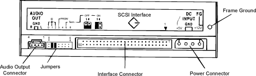

Operating Documentation
Direction 5114043-800, Rev# 9
LightSpeed 3.X Service Methods (Advanced)
Operating Documentation |
Illustration 1: GE Specific Jumper Settings

S0, S1 and S2 jumpers determine the SCSI ID number.
Table 1: Strap Jumper Settings
| SCSI ID | S0 | S1 | S2 |
|---|---|---|---|
| 0 | OFF | OFF | OFF |
| 1 | ON | OFF | OFF |
| 2 | OFF | ON | OFF |
| 3 | ON | ON | OFF |
| 4 | OFF | OFF | ON |
| 5 | ON | OFF | ON |
| 6 | OFF | ON | ON |
| 7 | ON | ON | ON |
Illustration 2: CD-ROM Jumper Block
S3: Parity Check
Strap jumper ON: The drive does NOT perform parity check.
Strap jumper OFF: The drive performs parity check.
S4: Logical Block Size
Strap jumper ON: The drive operates at 512 bytes per logical block.
Strap jumper OFF: The drive operates at 2048 bytes per logical block.
S5: Terminator
Strap jumper ON: Terminator is activated.
Strap jumper OFF: Terminator is NOT activated.
S6: Factory. Reserved for Factory Use Only (always OFF)